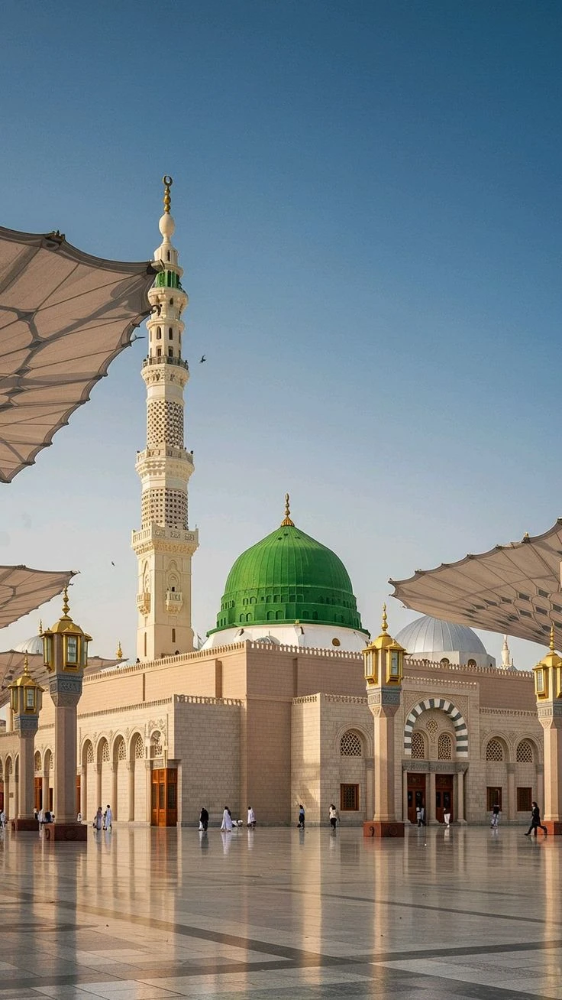

Makmurkan masjid, bareng-bareng
Masjid yang makmur membuat pemuda, jemaah, dan warga istiqomah dan betah berlama-lama beribadah di dalamnya.

Tentang Barudak Bageur
Barudak Bageur adalah lembaga yang mengajak pemuda, jemaah, dan warga untuk memakmurkan masjid. Kami ingin masjid menjadi tempat yang teduh, hangat, dan membuat siapa pun betah.
Kami percaya perubahan dimulai dari hal sederhana: datang lebih awal, saling menyapa, dan terlibat. Mulai dari satu kali datang lebih awal.
[Segera diisi pengurus: sejarah singkat, tahun berdiri, dan wilayah kerja.]
Makmurkan Masjid
Masjid sebagai tempat betah, bukan hanya tempat singgah.
Jemaah
Suasana masjid yang nyaman agar jemaah istiqomah dan betah beribadah.
Pengurus (DKM)
Pendampingan agar pengurus masjid punya teman berjalan dalam menghidupkan kegiatan.
Warga & pemuda
Ruang bagi warga sekitar, terutama pemuda, untuk ikut terlibat dan berkarya.
[Segera diisi pengurus: daftar kegiatan nyata yang sudah berjalan dan lokasi masjid binaan.]
Hayu, mulai dari yang kecil
- 1Datang dan sapa. Hadir lebih awal di masjid terdekat dan kenalan dengan jemaah lain.
- 2Terlibat. Hubungi kami untuk bergabung dalam kegiatan bersama barudak.
- 3Berbagi. Dukung program lewat donasi agar kebaikan terus tumbuh.
Kegiatan Kami
Foto kegiatan akan ditampilkan di sini, dengan izin wajah dari jemaah yang tampil.
segera diisi
segera diisi
segera diisi
Cara Berdonasi
Setiap kebaikan membantu masjid tetap hidup. Jazakumullah khairan.
[Segera diisi pengurus: nama bank, nomor rekening, atas nama, atau tautan donasi.]
Laporan penggunaan dana akan kami sampaikan secara terbuka.
Konfirmasi Donasi